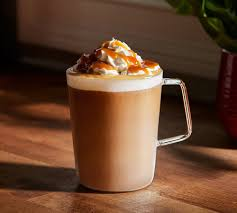
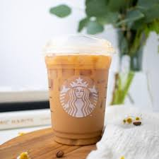
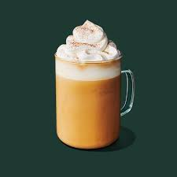

Caramel Macchiato
Coffee Drink
Make your own Caramel Macchiato with espresso, steamed milk, and caramel sauce!s


Vanilla Latte
Starbucks Latte
Espresso, steamed milk, and vanilla syrup make this creamy, sweet beverage.

Pumpkin Spice Latte
Starbucks Latte
A cozy mix of espresso, steamed milk, pumpkin puree, and spice.